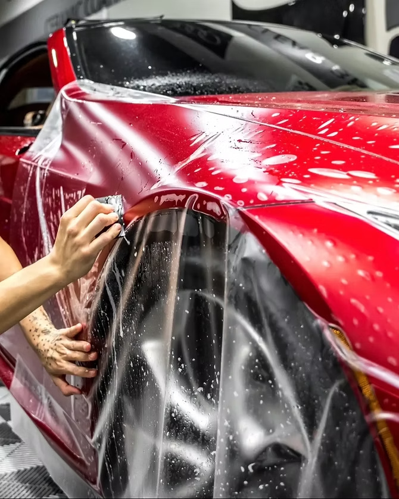
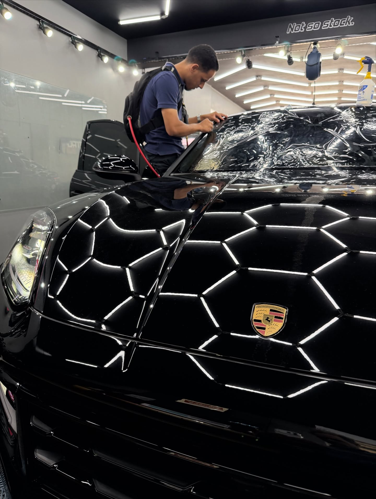
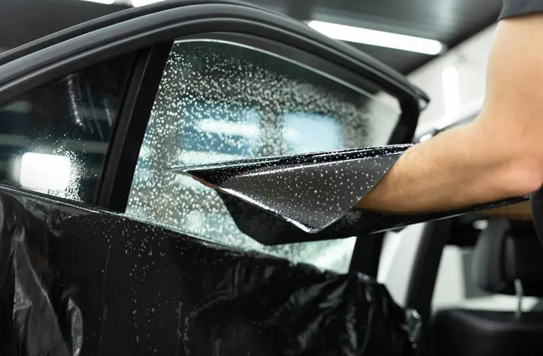
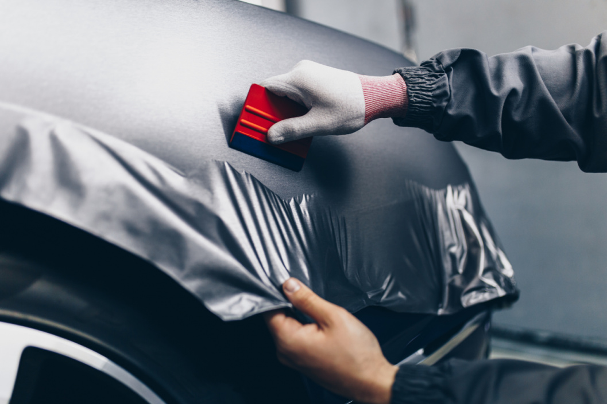
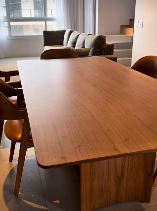

PPF — Proteção de pintura
Uma camada transparente de poliuretano que absorve o risco no lugar da sua pintura. Nos micro-riscos do dia a dia, o filme se fecha sozinho com o calor do sol.
Ver o serviço
PPF, película e envelopamento em Formiga. O filme sai cortado do plotter no molde exato do seu modelo, então o corte nunca acontece em cima do carro. É daí que vem o acabamento que você vê nas bordas.
Todo mundo consegue colar filme no meio de um capô. A diferença aparece onde o filme encontra a borracha, o farol e a quina do parachoque.

Uma camada transparente de poliuretano que absorve o risco no lugar da sua pintura. Nos micro-riscos do dia a dia, o filme se fecha sozinho com o calor do sol.
Ver o serviço
Menos calor dentro do carro, sem perder sinal de celular nem GPS. A linha cerâmica tem 5 anos de garantia de fábrica.
Ver o serviço
Grade, retrovisor, frente inteira ou faixa de moto trocam de cor sem passar por cabine de pintura. E voltam ao original quando você quiser.
Ver o serviço
Vidro que esquenta demais, sala sem privacidade, armário planejado datado. Os três se resolvem sem obra.
Ver o serviçoNão é talento. É o processo, o material e o lugar onde o carro fica.
Falar sobre o seu carroO molde do seu modelo sai pronto da plotter Tech-Cut, no tamanho exato da peça. Ninguém apoia estilete na sua lataria para acertar a medida.
Cinco anos na linha NX Ceramic e três anos na proteção solar. É garantia de fábrica da marca do filme, não promessa de balcão.
Nexus Window Film nas películas e ALLTAK no envelopamento. Você sabe qual filme entrou no seu carro e a quem recorrer se der problema.
Os certificados de curso ficam expostos na loja. Filme aplicado sem técnica descola na borda, borbulha no calor e amarela em menos de dois anos.
Tanque, carenagem e rabeta pedem molde e paciência diferentes dos de carro. Poucos aplicadores da região pegam esse serviço.
Poeira é o que estraga uma aplicação. O carro não fica em área aberta, e a iluminação hexagonal mostra defeito que a luz do dia esconde.
A diferença de um serviço bem feito não cabe em texto. Puxe a divisória.
PPF em capô · Riscos de estrada e marca de inseto antes do filme.
Depoimento sem nome, cidade e veículo não convence ninguém. Estes três espaços esperam material real. Preencher
Espaço reservado para o depoimento de um cliente de PPF.
Espaço reservado para o depoimento de um cliente de película.
Espaço reservado para o depoimento de um cliente de moto.
Você manda o modelo, o ano e o que quer resolver. Foto ajuda muito.
A gente olha a pintura e os vidros. Nem todo carro precisa do mesmo serviço.
Valor fechado, com as peças incluídas listadas e o prazo de garantia.
Data marcada e quantos dias o carro fica, combinado antes.
Box fechado, filme cortado no molde do modelo, aplicação e cura.
Revisão junto com você, orientação de cuidado e a garantia registrada.
Se a sua não está aqui, manda no WhatsApp. Responder dúvida é parte do serviço.
Perguntar no WhatsAppVitrificação é um líquido que cura sobre a pintura e forma uma camada dura de poucos mícrons. Ela dá brilho e facilita a lavagem, mas não segura o impacto de uma pedra na rodovia. PPF é um filme de poliuretano transparente, com espessura de verdade, que fica entre a pedra e a sua pintura.
Um cuida da aparência, o outro cuida do dano. Muita gente aplica os dois: PPF nas áreas de impacto e vitrificação no resto.
A regra tem número. A Resolução 254 do CONTRAN define a transmitância mínima de luz: 75% no para-brisa, 70% nos vidros das portas dianteiras e 28% nos demais vidros. Percentual abaixo disso não é liberado para veículo que circula em via pública.
Quando você fala com a gente, a primeira coisa que definimos é qual percentual entra em cada vidro, para o carro passar em qualquer fiscalização.
Não. Esse problema vem das películas metalizadas, que têm camada condutiva. A linha NX Ceramic da Nexus não é metalizada, então celular, GPS, sensor de pressão de pneu e tag de pedágio continuam funcionando normalmente.
É onde ele rende mais. A pintura de fábrica ainda está intacta, então o filme preserva o estado original em vez de selar um dano que já aconteceu.
Na hora da revenda, a diferença aparece no capô e no parachoque, que são as áreas que mais denunciam quilometragem de estrada.
Depende do serviço e do porte do veículo. Película de vidros costuma sair no mesmo dia. PPF de áreas críticas leva mais tempo, e Full PPF é serviço de vários dias, porque o filme precisa de cura antes de o carro pegar chuva e sol.
O prazo exato entra no orçamento, antes de você deixar o carro.
Não existe tabela única. O preço muda com o porte do veículo, o estado da pintura e quais peças entram no serviço. Um Full PPF de picape e um PPF de áreas críticas de hatch não têm como custar o mesmo.
Mande o modelo e o ano no WhatsApp que a gente fecha o valor com o que está incluído por escrito. Definir faixa de preço
A linha NX Ceramic da Nexus Window Film tem 5 anos de garantia de fábrica. A linha de proteção solar tem 3 anos. A cobertura é para defeito do material: descolamento, bolha e alteração de cor dentro do prazo.
A garantia vem da marca do filme, não só da loja. Confirmar garantia do PPF e da linha NX Carbono
Pode, respeitando o período de cura logo após a aplicação. Nos vidros, espere alguns dias antes de acionar os vidros elétricos e não use produto abrasivo nem espátula.
No PPF, evite jato de alta pressão apontado direto para as bordas do filme. A orientação completa você recebe na entrega do carro.
Preencha os campos e a mensagem abre pronta no seu WhatsApp, já com os dados do veículo. Você só confere e envia.
Se preferir, chame direto: (37) 99912-7964